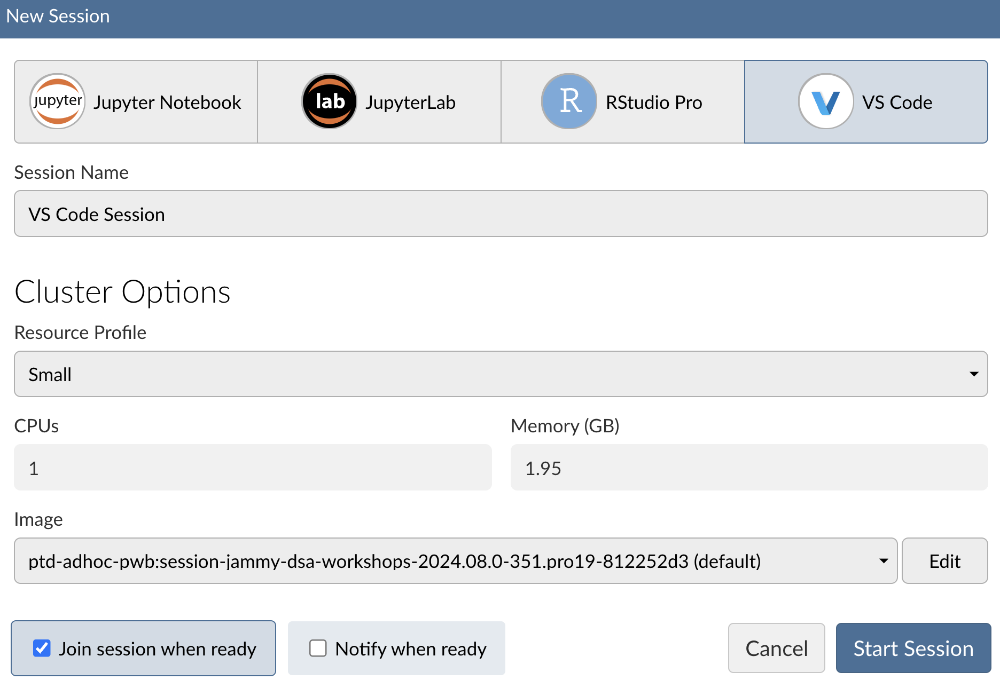

Download PDF

Posit Team is the bundle of Posit’s most popular products including: Workbench, Connect, and Package Manager. Together, this bundle delivers an end-to-end toolchain for data science teams committed to R and Python, improving every step of a data scientist’s workflow, from developing insights, to deploying data products, to managing environments.
Posit Workbench: Development environment for creating insights.
Posit Connect: Hosting environment for accessing and sharing insights.
Posit Package Manager: R and Python package repository management.

Current integrated development environments (IDEs) include Jupyter Notebook, JupyterLab, RStudio Pro, and Visual Studio Code.
Cluster options may vary depending on how Posit Workbench is configured in your environment.
Within an R session, you can check your R repositories by running:
options("repos")For Python, you can use pip to list your current Python repositories:
pip config listTo set your R repositories to Posit Package Manager, run:
options(repos = c(CRAN = "https://your-package-manager-url.com"))To ensure this persists across sessions, add this line to your .Rprofile file.
To set your Python repositories to Posit Package Manager, run:
pip config set global.index-url https://your-package-manager-url.comTo ensure this persists across sessions, add this line to your .bashrc or .bash_profile file.
To obtain the URL for your Posit Package Manager, click the SETUP button within the user interface of Posit Package Manager and scroll to Repository URL:. You can also leverage Posit Public Package Manager for CRAN, PyPI, and Bioconductor packages: https://p3m.dev/
Access your data within Posit Team no matter where it lives and what format it is in, including:
Flat files: examples including data.csv, data.txt, data.parquet.
APIs: Interact with APIs using packages such as {requests} in Python or {httr2} and {jsonlite} in R.
Pins: Store and retrieve Python/R objects including data and models.
Databases: Connect to a variety of database types using DBI/DB-API/ODBC.
Below is an example of connecting to a PostgreSQL database using the DBI package in R:
con <- DBI::dbConnect(
RPostgres::Postgres(),
hostname = "db.company.com",
port = 5432)Below is an example of connecting to a PostgreSQL database using the psycopg2 package in Python:
con = sqlite3.connect('example.db')Below is an example of connecting to a PostgreSQL database using the odbc package in R:
con <- DBI::dbConnect(odbc::odbc(),
driver = "PostgreSQL Driver",
database = "test_db",
UID = Sys.getenv("DB_USER"),
PWD = Sys.getenv("DB_PASSWORD"),
host = "localhost",
port = 5432)Below is an example of connecting to a PostgreSQL database using the pyodbc package in Python:
con = pyodbc.connect(
driver = 'PostgreSQL',
database = 'test_db',
server = 'localhost',
port = 5432,
uid = os.getenv('DB_USER'),
pwd = os.getenv('DB_PASSWORD'))A full list of Posit provided professional ODBC drivers can be found here: https://docs.posit.co/pro-drivers/
Posit Workbench includes multiple options for running your R and Python code, including:
Support for multiple R and Python versions.
Support for virtual environments (e.g., venv) and project-oriented workflows.
Submit long-running Python/R jobs to Posit Workbench server to run in independent sessions using Workbench Jobs within RStudio Pro (https://docs.posit.co/ide/server-pro/user/rstudio-pro/guide/workbench-jobs.html) and VS Code (https://docs.posit.co/ide/server-pro/user/vs-code/guide/workbench-jobs.html).
Currently supported content on Posit Connect includes:
Quarto
R Markdown
Jupyter Notebooks
Most documents are considered “static.” However, documents created with Voilà or R Markdown that include Shiny components are considered “interactive.”
Shiny (R and Python)
Bokeh
Streamlit
Dash
Plumber
FastAPI
Flask
Tensorflow
plumbertableau
FastAPI Tableau
Vetiver
Connect supports multiple methods for publishing content, including:
rsconnect: Publish content directly from R using the rsconnect R package.rsconnect-python package.For Git deployment, content will automatically fetch from the associated remote Git repository and re-deploy. This allows for integration with Git-centric workflows and continuous deployment automation.
Questions about sales and licensing? Contact sales@posit.co
Experiencing technical issues? Contact support@posit.co
Other questions? Contact info@posit.co
Posit Team documentation: https://docs.posit.co
Posit Team release notes: https://docs.posit.co/release-notes.html
Posit Community: Posit Community is an open forum for any open source or Posit Team quetsions: https://forum.posit.co
Monthly End-to-End Workflow Demos with Posit Team: Join our monthly Posit Team Demos on the last Wednesday of every month: https://pos.it/team-demo